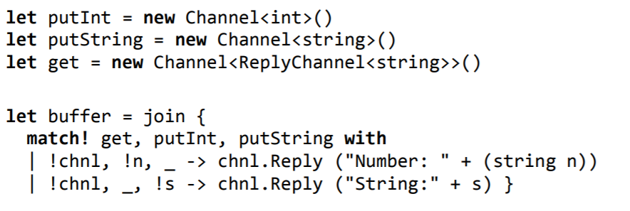
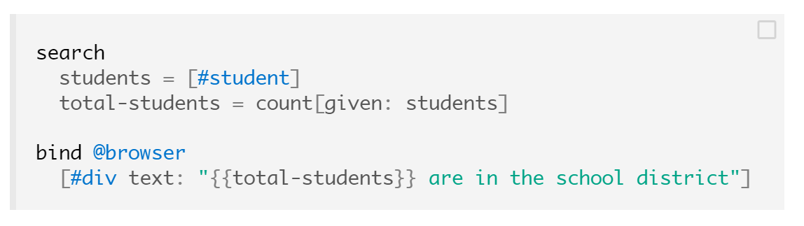

An anatomy of interaction:
Co-occurrences and entanglements
(Basman, Tchernavskij, Bates & Beaudouin-Lafon)
Tomas Petricek
tomasp.net | tomas@tomasp.net | @tomaspetricek
Enabling active participation
Making creation simpler
TOMAS: How do we tell what is simpler?
ANTRANIG: We just know. Don't be silly!
TOMAS: But how do we sensibly talk about it?
Substrate complexity map


Open systems
Closed system
Separates low level and high level
High level open to simple modification
Open system
Can be modified within itself, i.e. Smalltalk
Does it need to be written within itself?
How simple can open system be?
Turing completeness
Given some elementary power, we can encode
everything, but inherit certain problems.
Open system-ness?
Minimal complexity required to make open system?
Metaphors in programming
Three levels of programming concepts
- Metaphorical intuitive level
- Technical source code level
- Formal reasoning level
(See "What we talk about when we talk about monads")
Metaphorical level
Metaphors in the paper
- Chemical elements and reactions
- Quantum physics
- Cooking and recipes
Methodological
How do we know it's a good metaphor?
What can we do with them?
Practical
Use multiple metaphors to program one thing?
Formal and source code level
Related work
Several related closed abstractions
Is there a path to make them open?
Join calculus
Introduced as formal chemical machine

Eve language
Logical roots and pattern matching

Can we make those open?
Technically
Make it possible to modify the "source code"
Simplicity
Make "source code" simpler and provide tools
Politically
A way to bootstrap the community and tools
Summary
- Simplicity and enabling active participation
- Open systems and their limits
- Metaphors as a useful programming tool
Tomas Petricek | tomas@tomasp.net | @tomaspetricek